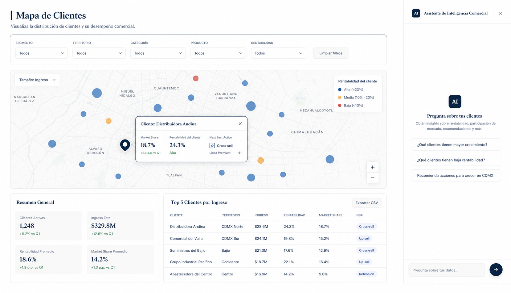

B
Commercial Intelligence Engine
We convert visibility
into commercial decisions.
Thirteen analytical capabilities that turn structured commercial data into prioritized decisions, organized in four families. Trade-offs made explicit. Decisions, not reports.

